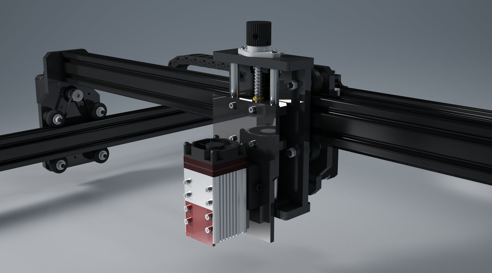
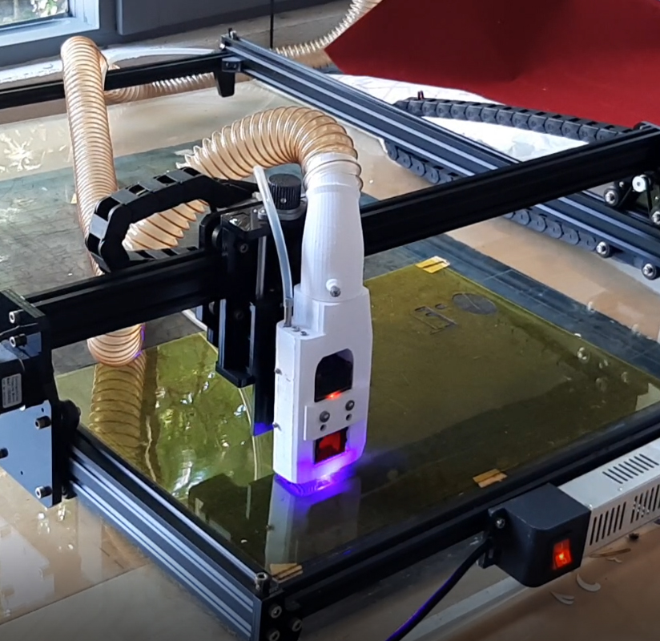
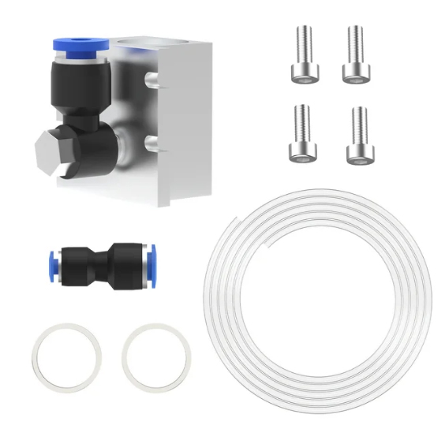

80W Lazer ( NEJE ) Kesici
Merhaba meraklı arkadaşlar,
Mini lazer denememden sonra 20W güce sahip lazer kesim makinası projemi de sizlere anlatmıştım.
Şimdiki lazer kesici makinamızın lazer gücü 80W. Şase tasarımı ve işleme alanı bir önceki makinamızla aynı. Lazerin ve motorların güç ihtiyacını karşılayabilmek için 12 V 10 A adaptör kullandık.
Adaptörün formunun makinamızla uyumlu olması için ince uzun tasarımı olan bir adaptör seçtik. Adaptörün her iki başına 3d printerda bastığımız aparatları kullanarak profile (şasiye) bağladık. Ayrıca adaptörün üzerinde açma kapama anahtarı olmadığı için güç girişindeki aparatın üzerine ışıklı bir anahtar ekledik. Bu anahtara hava emiş için kullandığımız aspratörü ve hava pompasını da bağlayıp bütün sistemin elektriğinin açıp kapama işini kontrol edebiliyoruz. Aspratör ve hava pompasının kontrolünü lazer programından da (Lightburn) yapabilmek için kontrol kartına bağlı 2 röle koyduk. Adaptörün çıkışına da kontrol kartına (motorlara) ve lazere ayrı ayrı iki çıkış koyduk. Lazer gücünü doğrudan adaptörden aldığı için de karta çok yüklenmemiş olduk.

Tasarımımızda hava üfleme için HAILEA (ACO308-30W) kompresörü kullanıyoruz. Hava üfleme, temiz kesim için mutlaka olmalı. Kompresörümüz de elektriğini (220V) adaptöre giriş hattından alıp kontrol kutusunda programla kontrol ettiğimiz röleye bağlı. Hava üfleme ve duman emiş kontrolünü (açıp-kapama) adaptör açıkken, kontrol kutusuna koyduğumuz ışıklı düğmelerle de ayrıca yapabiliyoruz.


Makinamıza Z ekseninde manuel hareket sağlayan bir parça ekledik. Bunun sayesinde 20 mm ye kadar kesim yapabileceğimizi düşünüyoruz. Lazer modülümüzün lazer odaklaması için bir ayarı bulunmuyor. Önceki modüllerde ise lazer modülün ucundaki lensi çevirerek odaklama yapabiliyorduk. Yeni eklediğimiz Z modülü ile 80W lazerimizde çok rahat odaklama yapabiliyoruz. Z modülün tasarımını internette gördüğümüz yayınlardan derledik ve makinamıza uygun ölçülerde imal ettik. Modülün çalışma videosunu bu linkten izleyebilirsiniz.

Projenin 3dsMax programıyla yaptığım tasarım çalışmasından bir görsel.
Daha sonraki günlerde lazerin kazıma ya da kesim yaparken çıkan dumanı çok rahatsız edici olmaya başlamıştı. Bunun için dumanı tahliye eden bir aparat geliştirdik. Elimde çapı 15cm olan bir aspratör vardı. Bununla bir deneme yaptık. 15 cm den 5 cm e düşünce hava emişi ne kadar etkili oluyordu. Denemenin videosunu da bu linkten izleyebilirsiniz. Sonuç iyi değildi. Aparatın olduğu bölümde hava girdap oluşturuyor ve dumanı dışarıya atamıyordu. Sebebini biraz araştırınca ani kesit düşüşünün girdaba neden olduğunu anladım. Ve aynı deneyi 10 cm çaplı aspratörle ( hava debisi: 107 m3/h ) denedik. Sonuç başarılı oldu. Ancak bunun test videosunu çekmemişim. Kullanmamız gereken aspratörün çapına karar vermiş olduk. Duman emici aparatın daha iyi vakum yapabilmesi için kullandığımız boru çapı 5 cm, ısıya dayanıklı alev almaz sanayi tipi silikon bazlı spiral bir boru. Hava emişi 10 cm den 5 cm’ e düşürmek için aspratörle boru arasına bir adaptör tasarlayıp 3d printer’da bastık. Çalışma videosunu bu linkten izleyebilirsiniz.

Aparata önceden kullandığımız hava üflemeyi de dahil ettik. Son kullandığımız tasarıma gelinceye kadar birçok farklı model denedik.
Bu versiyonda dumanı ince süngerle filtre edip bir fön makinası ile tahliye etmeyi planladık. Duman emiş bölümünün çapı ince filtreden sonraki bölümün çapı ise daha büyük olursa hava akımının emiş için uygun olacağını düşündük. Ancak lazerin keserken çıkardığı duman o kadar fazlaydı ki boru çaplarını büyütmemiz gereken yeni bir tasarıma giriştik. Fön makinasını da hızlı ayarda çalıştırmak gerekiyordu. Bu da oldukça fazla ses yapıyordu.
Fön fikri de aslında başlı başına bir macera. Fön makinasının ısıtıcısını açmadan çalıştırmanız gerekiyor. Maalesef elimdeki fön, ısıtıcıyı açmasam bile az da olsa sıcaklık veriyordu. Isıtıcı görevi gören telleri devre dışı bırakmaya çalıştığımda da motora direk 220V gitmiş olacağını fark ettim. Bir kaç revizyondan sonra ısıtıcıyı görevini yapmadan devrede bırakmanın yolunu buldum. Isıtıcı kullanmasam da motoru çalıştırabilmek için rezistans tellerini bırakmak zorunda kaldım. Tuhaf görünümlü ama jet motoru kıvamında aşırı sesli bir vakum cihazımız oldu.


Bu versiyonun videosu için link …

Bu versiyonun videosu için link_1 … link_2 …


Bu versiyonun videosu için link …
Hava üfleme için kullandığımız 3D print PLA baskı aparat bir müddet sonra sıcaktan deforme olmaya başladı. Bunun yerine aliexpress‘ ten metal yapıda olanını aldık.

Duman tahliyesi ve Z ekseni revizyonları hakkındaki yenilikler ve paylaşmak istediklerim henüz bitmedi …
Devam edecek …
İlk yayın: https://pointpointblog.wordpress.com/2023/11/24/80w-lazer-neje-kesici/